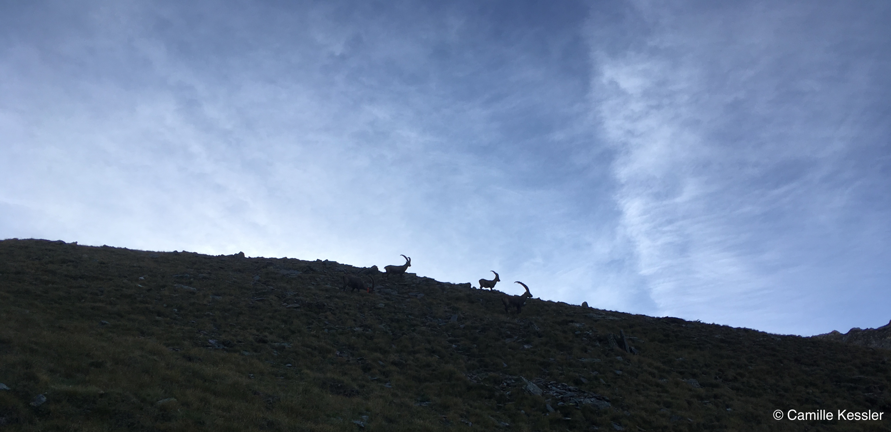

Alpine ibex sequencing assay and immunogenetics
Alpine ibex is an emblematic alpine species that was severely impacted by overhunting in the 1800's to the point that there were only about 100 individuals left. Ironically, the species was saved because then King of Italy, Vittorio Emanuele II, loved ibex hunting so much that he protected the species and provided a refuge in what is now the Gran Paradiso National Park. All existing populations, with a total of about 50,000 individuals, stem from this single refugial population. The bottleneck left distinct genomic traces, including one of particular concern: low genetic diversity at the MHC. The MHC is a region of the genome that codes for pathogen recognition proteins, the more diverse this region is, the more resistant an individual is to diseases. Low diversity at this region can therefore lad to higher disease susceptibility. Interestingly, in alpine ibex, some variation at the MHC was produced through introgression from domestic goat.
This is where my Master's thesis comes into play. I carried it out at the Université de Neuchâtel in Switzerland under the supervision of Prof. Daniel Croll and in collaboration with Prof. Christine Grossen of the University of Zürich. The aim was to produce a sequencing assay to monitor the alpine ibex populations. For this, we designed and validated a microfluidic assay of about 1,000 amplicons that can be used for easy and cost-effective population monitoring of alpine ibex. The assay simultaneously screens for population structure, immunogenetics and hybridisation with domestic goat, and perfoms well in comparison with RAD-seq and low coverage WGS data. With our assay, we were able to reconstruct the reintroduction history of alpine ibex with the Gran Paradiso population as the source of all other and each reintroduction represented a bottleneck event with a loss of genetic diversity. We were also able to confirm the identity of seven suspected hybrids, of which only three were actual hybrids. Finally, the analysis of immunity-related loci confirmed the low genetic diversity at the MHC previously observed in this species.
Want to read the paper?
Kessler, C., Brambilla, A., Waldvogel, D., Camenisch, G., Biebach, I., Leigh, D. M., Grossen, C., & Croll, D. (2022). A robust sequencing assay of a thousand amplicons for the high-throughput population monitoring of Alpine ibex immunogenetics. Molecular Ecology Resources, 22, 66–85. https://doi.org/10.1111/1755-0998.13452
Polymorphism for immune functions can explain significant variation in health and reproductive success within species. Drastic loss in genetic diversity at such loci constitutes an extinction risk and should be monitored in species of conservation concern. However, effective implementations of genome-wide immune polymorphism sets into high-throughput genotyping assays are scarce. Here, we report the design and validation of a microfluidics-based amplicon sequencing assay to comprehensively capture genetic variation in Alpine ibex (Capra ibex). This species represents one of the most successful large mammal restorations recovering from a severely depressed census size and a massive loss in diversity at the major histocompatibility complex (MHC). We analysed 65 whole-genome sequencing sets of the Alpine ibex and related species to select the most representative markers and to prevent primer binding failures. In total, we designed ~1,000 amplicons densely covering the MHC, further immunity-related genes as well as randomly selected genome-wide markers for the assessment of neutral population structure. Our analysis of 158 individuals shows that the genome-wide markers perform equally well at resolving population structure as RAD-sequencing or low-coverage genome sequencing data sets. Immunity-related loci show unexpectedly high degrees of genetic differentiation within the species. Such information can now be used to define highly targeted individual translocations. Our design strategy can be realistically implemented into genetic surveys of a large range of species. In conclusion, leveraging whole-genome sequencing data sets to design targeted amplicon assays allows the simultaneous monitoring of multiple genetic risk factors and can be translated into species conservation recommendations.